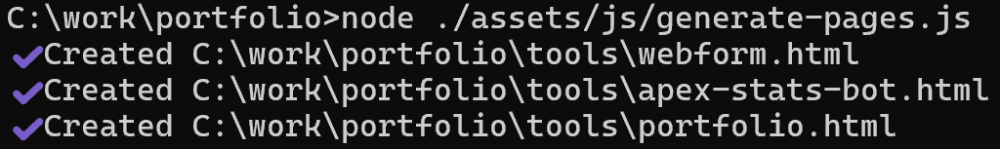

概要
このポートフォリオサイトは、各ツールやコンテンツの情報からHTMLを自動生成する仕組みを持っています。
目的
ツールが増えた際に、HTMLを手動で書き足す必要がないようにする。
情報の管理をMarkdownやJSONなど別ファイルに分離し、記述のしやすさを担保する。
見た目の一貫性を保ちながら、新しいツール情報を簡単に追加可能にする。
使用方法
- portfolioのプロジェクトディレクトリ内で、以下のコマンドでgenerate-pages.jsを使用します。
node ./assets/js/generate-pages.js
- index.html
/data/tools.jsonをもとにカードUIが生成されます。 - また、
/data/tools.jsonの情報を基にツール名称の一致する\data\details\内のMarkdownファイルの内容をHTMLに置き換えます。
イメージ
HTMLの生成

今後の予定
- 🚀 デザイン強化